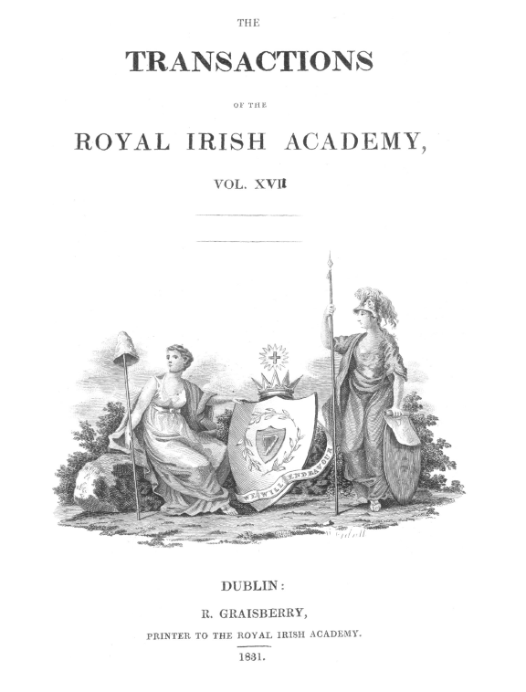

Telling Digital Stories
Dr. Alexander O'Connor Alex.OConnor@scss.tcd.ie
@uberalex
http://www.oconnoat.com
Documents can have hidden messages
You can tell many stories with a collection, a document, a paragraph, a sentence, a word.
I don't know what to search for, and when I get the answer back, I don't know what it means!
This Presentation:
- Has 20 Slides
- Is for a five minute talk
- has
00
left - is written in html5 and javascript
Positive
Negative
Sarcastic
Human Annotation: Cohen's Κ ~ 0.6

5,634,896 words
spanning over 489 articles
in 25 volumes
from 1800-1899
dreams mind dream theory waking law operation reason ideas thought nature objects sleep ordinary wholly rev cases idea combination
- Extract the linguistic text from the articles
- Applicability of modern tools? (Spell Checking)
- Stability of the Topics?


Use semantic reasoning to make queries from a question
- List units engaged near Breslau in 1917
- Order the works of Raymond Llull by certainty of authorship, then by degree of scientific content
- Help to discover what I didn't know I was looking for.
Use semantic reasoning to make queries from a question
- List {divisions, companies} engaged near http://live.dbpedia.org/page/Wroc%C5%82aw in {^^XSD:Date:1917-1-1, ^^XSD:Date:1917-12-31}
- Order the works of Raymond Llull by {'Raymondus Llullus','Raymond Llull',
'il Dottore'}, then by {# of topics with scientific tag}

- PhD, Computer Science, Trinity College Dublin (2010)
- Research Fellow, CNGL, Personalisation & Adaptivity
- Data Cleaning
- Knowledge Modelling
- Content Analysis beyond the keywords
- Web
- Semantics
- Machine Learning
Try a technique on new content, a new technique on old content, or experiment with different users
Hard for computers
(but not too hard)
(but not too hard)
Hard for Humans
(slow, laborious but defined)
(slow, laborious but defined)
Interesting
(enough for there to be data, and people to interpret the result)
(enough for there to be data, and people to interpret the result)